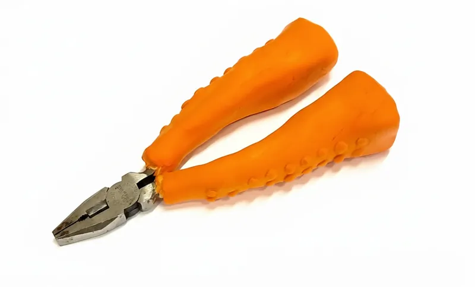
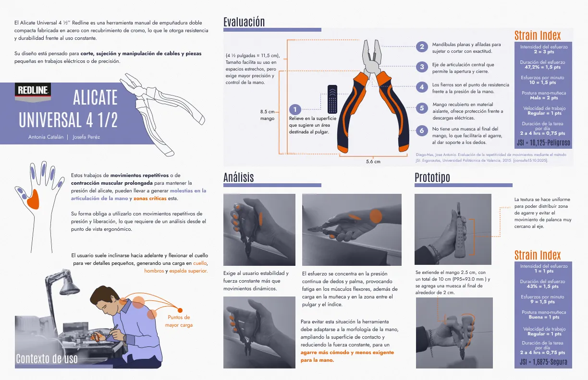
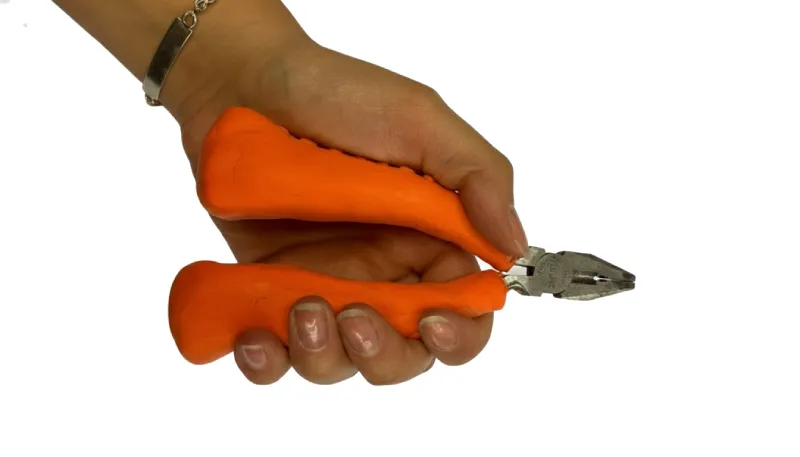
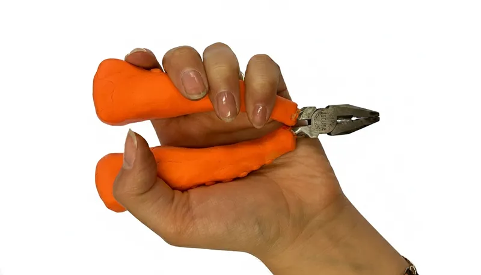

Alicate Universal
Este proyecto surgió como el desafío de modificar una herramienta existente mediante un análisis riguroso de su contexto y la experiencia de usuario. El proceso se centró en los alicates utilizados en trabajos eléctricos, aplicando herramientas de medición para evaluar riesgos, factibilidad y requerimientos ergonómicos. El resultado es la propuesta de un rediseño que proporciona una herramienta sustancialmente más ergonómica y segura para los electricistas, optimizando su desempeño y bienestar en el ambiente de trabajo.



